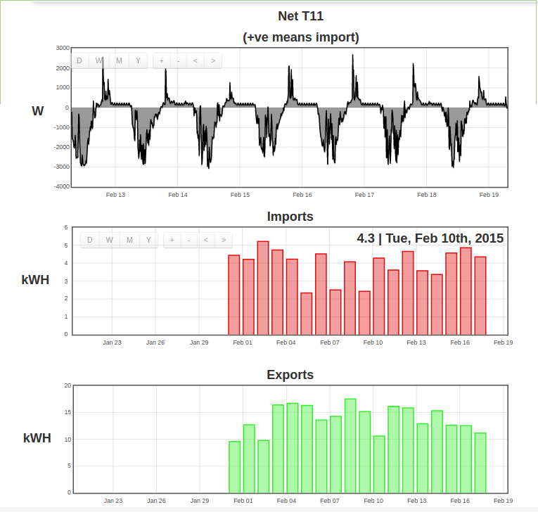
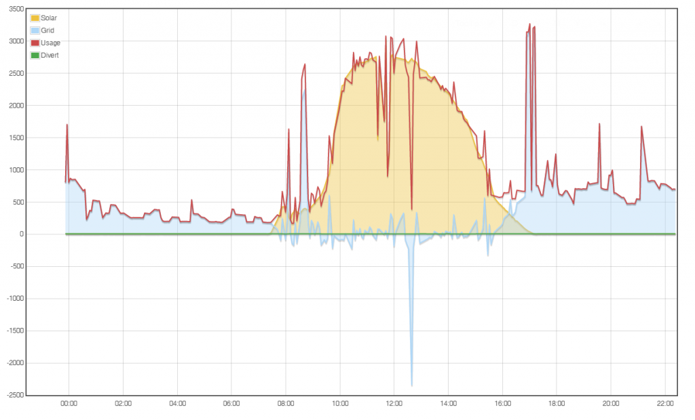

I've been doing further work on the idea of application specific dashboards and have added a solar pv dashboard to show how much of realtime electricity consumption is being supplied by PV, plus a comparison graph and energy balance line.
Here's a screenshot:

This is available on emoncms.org under the new Apps tab where you will also find the MyElectric and MyHeatpump application specific dashboards. The code is also on github here and can be installed by dropping the app folder in your emoncms Modules folder https://github.com/emoncms/development/tree/master/Modules/app
Id like to extend this dashboard to include daily kwh data showing:
- solar pv production kWh/d
- house consumption kWh/d
- Imported electricity kWh/d
- Exported electricity kWh/d
and to document the process of setting up the feeds required and input processing (or potentially post processing) so that there is a clear guide available on getting this all up and running.
I've been trying to come back to this question of what do we need in emoncms for specific applications. How can we make emoncms work really well for solarpv, home energy monitoring, heatpump monitoring and then working backwards to work out what underlying core features required are.
There's some more information on the long term development of these ideas in the following forum posts and blog post for more context.
myelectric dashboard improvements v8.0.8
http://openenergymonitor.org/emon/node/4775
MyElectric mobile view:
http://openenergymonitor.blogspot.co.uk/2014/06/emoncms-mobile-view-my-e...
Heatpump dashboard:
http://openenergymonitor.org/emon/node/10123
Re: Application specific dashboards: Solar PV
This dashboard uses a naming convention in the same way as the heatpump dashboard. It looks for feeds with the names: solar_power and house_power. With the intention of reducing the amount of manual configuration required.
Re: Application specific dashboards: Solar PV
This looks great Trystan - awesome work.
One question - do the feed names have to adhere to your conventions, or can we configure it to use existing feeds already setup in an installation?
I will be looking to have a play with this very shortly, and the heatpump dashboard, once I figure out how to measure my flow/return temps!
Re: Application specific dashboards: Solar PV
Got this running on my local EmonCMS instance. How much data is needed before I will start seeing the pretty graphs ;)? What is the default grid view period?
Looks great so far though - once again, fantastic work!
Re: Application specific dashboards: Solar PV
That looks very slick! Here's my rough equivalent built from the traditional visualisations....

Re: Application specific dashboards: Solar PV
Yep - I have a similar set of graphs - but I do like the look/feel of this purpose built dashboard. Just wondering if something is wrong however, as I am still not seeing anything in the graphs or in the running totals at the bottom.
Trystan - does the dashboard only require the two solar/house power feeds? I.e. does it use them internally to count up the kWh totals? Or does it need accumulator feeds as well?
Re: Application specific dashboards: Solar PV
Hi Ben,
Have you renamed the feeds? I have just changed my "solar" and "grid" feeds to "solar_power" and "house_power" and instantly got these graphs, they chart the power use rather than energy used.
Although I think the sums may need looking at or maybe the labels are a little off.
I have produced around 14.4Kwh's PV and due to electric heating, hot water and a diverter, I haven't exported anything (0.4kwh to and fro in the sweet spot recorded) I have also imported around 9 kwh's from the grid so my house use should be 23kwhs and 60% ish solar and the rest from the grid.
I'm going to do some sums to check and watch it tomorrow as it maybe due to only just firing it up, maybe ?
Paul
Re: Application specific dashboards: Solar PV
Yep - renamed my feeds and I am seeing the 'now' values, just no graph or running totals at the bottom.
Also attached my feeds...
Re: Application specific dashboards: Solar PV
What type of feeds are they? mine are PHPfina.
Re: Application specific dashboards: Solar PV
Ah - mine are PHPFIWA - what is the difference there?!
Re: Application specific dashboards: Solar PV
@summerboy I've missed a step for local installs, this needs a modification to the feed engines (to get time accurate alignment between the two feeds) Il get that committed to github
Re: Application specific dashboards: Solar PV
Sweet - so my PHPFIWA feeds will be ok? Let me know when committed and I will update. Thanks again!
Re: Application specific dashboards: Solar PV
@pb66 is the house power feed your using just your grid import? do you have a house power feed independent of solarpv? including pv diversion?
Re: Application specific dashboards: Solar PV
I have calculated feeds I could find a whole house without solar incl divert.
My CT's are on grid, solar and divert.and my main calc feeds are export, import, Actual use (excluding bonus from diverter) and diverted.
I didn't consider my total use including surplus pv was a good KPI but if thats what's needed I can find one.
Paul
Re: Application specific dashboards: Solar PV
Aha! found a whole house which makes the totals more accurate, but the graph is a little less informative. As it doesn't show actual use which is the only part in my control, This is my current multigraph, which doesn't look any where near as good but it does have the actual import/export (blue)

Re: Application specific dashboards: Solar PV
The parts I missed are now in the master branch of emoncms, this will currently work with PHPFina and PHPFiwa feeds.
Re: Application specific dashboards: Solar PV
Great thanks Trystan - so I need to be running the latest master code for EmonCMS?
Re: Application specific dashboards: Solar PV
yes thats it, what are you currently running?
Re: Application specific dashboards: Solar PV
Ok - updated EmonCMS from master but still not seeing my graphs. Anything I can check in logs etc?
Re: Application specific dashboards: Solar PV
Been running all day and still nothing in my graphs. Happy to do some digging but I am pretty green when it comes to PHP/JS. Let me know if there is anywhere I can look to try and figure out why those graphs/running totals aren't workin.
Cheers,
Ben
Re: Application specific dashboards: Solar PV
So to be clear guys, is the rough sketch below the desired CT monitoring locations?
Re: Application specific dashboards: Solar PV
Hi Paul, That is I think the preferred layout for many reasons, however the CT location isn't dictated by this dashboard implementation
And if for example (using your diagram) you had a ct on each of "solar inv", "house r/m" and "diverted load" you could sum "house r/m" and "diverted load" into a feed called "house_power" and use that.
If your ct's are arranged as you've shown (which I suspect they are if you are using a diverter) then "house_power" is actually derived from "supply" and "solar inv" to get a new feed for house consumption including diversion but without solar.
Paul
Re: Application specific dashboards: Solar PV
Hi Ben, have you checked your file & folder permissions? I initially got the same problem as you, no graph or totals, only current readings.
Now working OK.
Paul
Edit, left 'app' folder as 755, but changed files within to 644
sudo find /var/www/emoncms/Modules/app -type f -exec chmod 644 {} +Re: Application specific dashboards: Solar PV
Thanks Paul - I just tried that but no luck. All files are already owned by root:root and I tried updating permissions to 755 but it made no difference. I noticed all my other modules are working fine with 644 permissions so I have switched back to that.
I have configured the heat pump app (with just the heatpump_power feed) and I am seeing an embedded graph on that app page (see attached). But still nothing in the solar app.
Re: Application specific dashboards: Solar PV
The Solar app presents itself with a clean modern design, but neither 'My Electric' or 'My Solar' within the 'app' folder render very well on mobile devices. The original 'My Electric' which is still present was a welcome advancement as it shrunk to the width/height of the mobile viewport and gracefully reduced the amount of visible data accordingly, however this does not happen in 'app/my electric' and users have to resize and drag the screen to view the data.
This may be because it's still in development.
Would it be possible to present mobile data slightly differently on mobile devices, building upon the original 'my electric' app, for example, using CSS to get a different view in portrait and landscape views. Portrait could display the text information, whilst landscape could display the graphical data?
Paul
Re: Application specific dashboards: Solar PV
Paul - are you running a local emoncms instance? Or emoncms.org?
Re: Application specific dashboards: Solar PV
Local on a Raspberry, with latest git updates.
It's strange that I got exactly the same issue as you before I changed permissions - see screenshot.
Paul
Re: Application specific dashboards: Solar PV
It must be a permissions issue of some kind. All other apps/dashboards/widgets are fine tho.
Re: Application specific dashboards: Solar PV
Just to recap what I did;
1) git pull emoncms to get latest commits
2) Recursively set permissions for the app folder and files within to root/root
3) Recursively CHMOD app folder & files within to 755
4) CHMOD all files within the app folder to 644
Paul
Re: Application specific dashboards: Solar PV
Yep - so it all looks fine I think - same as yours;
Re: Application specific dashboards: Solar PV
And I definitely have the latest code (from yesterday) for both emoncms and apps.
Re: Application specific dashboards: Solar PV
Exactly same as mine, so what is different?? Probably a question for Trystan or Paul B.
Paul
Re: Application specific dashboards: Solar PV
Ah ha - enabled the Chrome developer tools and can see this error;
Which is this line;
var interval = (app_mysolarpv.house_data[1][0] - app_mysolarpv.house_data[0][0])/1000;Re: Application specific dashboards: Solar PV
Thanks Ben, If you look under the network tab in developer tools and refresh the page can you see if any of the data requests return any errors? It should look like this
Re: Application specific dashboards: Solar PV
Any chance that its your feed names? I've double checked with a fresh local install of emoncms master branch and new PHPFIWA feeds named solar_power and house_power and it worked ok.
Re: Application specific dashboards: Solar PV
Ben has posted a screenshot of his feeds (8th post in this thread) and they appear to be correctly named.
Paul
Re: Application specific dashboards: Solar PV
Yep - get an error during the history call;
Which is reporting;
As Paul mentioned, I am pretty sure my feed names are right. And I am seeing the feed values in the big text widgets showing the instantaneous values. It is just the grid and running totals (kWh).
Re: Application specific dashboards: Solar PV
This is the line in code;
$this->redis->incr("fiveseconds:getdatahits");
I don't think I am using redis or even have it installed.
Re: Application specific dashboards: Solar PV
You can easily check;
...will return PONG if redis is running
I'm not familiar with the current functions of redis, but it is shown as required dependency here.
Paul
Re: Application specific dashboards: Solar PV
Yep definitely not installed then. I checked thru the rest of the feed_model.php code and everywhere else that a redis call is made there is first a check to see if it is being used. I.e. it is written to support both mysql and redis. However in that get_history() method this check isn't made and redis is always called - which is obviously the issue on my server since I am not using it.
Hopefully this is an easy fix for Trystan, it is a bit beyond me unfortunately!
Re: Application specific dashboards: Solar PV
Ah didn't notice that. I have been running EmonCMS v8 for over 6 months without it. And as I mentioned above the app module code seems to be written to handle no redis except for this one method.
Will wait and see what Trystan says and install if needed. Thanks for helping out with this Paul!
Re: Application specific dashboards: Solar PV
Sorry I left that line in by mistake from emoncms.org (part of emoncms.org load monitoring), I've now removed it. Probably easiest to just do a git pull.
Re: Application specific dashboards: Solar PV
Id recommend installing redis though, it will reduce the write load to your disks giving them more life and you may notice emoncms running a little faster.
Re: Application specific dashboards: Solar PV
Did a clean local install. Feed names are solar_power and house power. Redis is installed and running (PONG verified) Feeds are PHPFIWA. I have no graph. Just the running values at the top of the display.
EDIT - 1731
Did a git pull to incorporate Trystan's latest fix. Graph displays OK now.
Thanks, Trystan!
Re: Application specific dashboards: Solar PV
Brilliant - thanks Trystan - working like a charm now! I have also installed redis as you suggested - thanks for the tip. Great dashboard!
Re: Application specific dashboards: Solar PV
Great good to hear! Interested to hear what you think of the balance line? I originally added it in with the idea of simulating energy storage and aim to continue developing that idea but I also think it gives a clearer visualisation of how much of the consumption is provided by the solar, the energy balance.
Re: Application specific dashboards: Solar PV
Can't really say at this time, as I created a fresh feed 'house_power' using calculated data. Just as I completed it, my rent-a-roof inverter died on me!
So awaiting a replacement inverter, before I can get some data to play with.
Paul
Re: Application specific dashboards: Solar PV
Not sure I follow exactly what the energy balance line is showing. What is the scale on the left?
Not a great solar day here today...
Re: Application specific dashboards: Solar PV
@sumnerboy The scale is kWh. @Paul Reed, o dear hope you get the replacement!
Re: Application specific dashboards: Solar PV
Ah right - of course! So it is showing the trend for the period being viewed (i.e. it will always start at zero on the left). I think that is a very cool 'view' of the data actually - can see it being quite useful for a 'glance' to see how generation has been for the selected period.
Here is my system for a month view (remembering I am in the middle of summer down here ;)).
It is definitely a much clearer indication of how much PV is actually being generated/used.
Re: Application specific dashboards: Solar PV
Ben, if you use the arrows and scroll to the right, so as to view tomorrows data and thereafter, is it blank as in most emoncms graphs, or as per the attached screenshot where the last recorded value is continually replicated.
Paul
Re: Application specific dashboards: Solar PV
I see the same as you Paul - the latest value is constant going into the future.
Re: Application specific dashboards: Solar PV
thats a great screenshot of the last month! very nice to see it balancing!
The behaviour when scrolling is expected. This is down to the way the underlying calculations work. Il try and look at that in future versions.
Re: Application specific dashboards: Solar PV
The scrolling issue doesn't bother me too much Trystan - just noticed it the other day. But I typically just click D/W/M to view specific periods and don't tend to move around with the +/- buttons.
Yeah - I think that month view is great indicator of how useful/interesting the energy balance line is. My solar array seems to be very well matched to my house load (in summer at least), the only issue being of course I have no storage do have to export during the day and import at night. If only there were cheap storage solutions I would be close to zero net import at this time of year.
Re: Application specific dashboards: Solar PV
@Trystan - I just had to upgrade PHP to v5.4 in order to upgrade my owncloud server to the new v8. Now as a result I am having trouble getting redis/dio to work.
When I type php5 -v I get;
I can see the dio.so/redis.so files are in /usr/lib/php5/20090626/ not /usr/lib/php5/20100525/ where it is looking (and where all the other php modules seem to be). The only ones in the 2009 folder are the dio and redis modules.
Sorry but I am a complete noob when it comes to php so I am a bit lost and Googling doesn't seem to have any answers. How can I install the dio/redis modules for php5 v5.4?
Many thanks for this OT support ;).
Re: Application specific dashboards: Solar PV
A bit more Googling and I found out how to update my PHP modules;
http://anton.logvinenko.name/en/blog/how-to-install-redis-and-redis-php-...
Re: Application specific dashboards: Solar PV
Please forgive the Noob question:
I have 2 CTs connected to my system.
1) reads the PV supply coming in
2) reads the imported power from the grid
How do I configure my inputs/feeds to make them work for the above dashboard, which is awesome :)
i.e do I need to add both together to make home_power? and if, how do I do that?
Thanks in advance
Re: Application specific dashboards: Solar PV
Yes, that's what I've done. Just add the following processes to an input.
Reset to zero
+ input grid
+ input solar
log to feed
Paul
Re: Application specific dashboards: Solar PV
Paul
Thanks for confirming my thinking.
My struggle is now how to actually do this....
Re: Application specific dashboards: Solar PV
Go to your inputs page, and edit your existing 'power' input node and add the processes that I have listed above, which will log the data to your new 'house_power' feed.
The app will automatically pick up the feed by itself.
Have a try, and if you get stuck, let me know and I'll post a screenshot.
Paul
Re: Application specific dashboards: Solar PV
Pier, (Camden) from your PM it appears that you are still having problems setting this up.
I have attached below a screenshot of the processes added to my 'imported power' input which may help.
If you are still having issues, please post in the forum where others may benefit from the solution. It would be useful if you could add some screenshots of the issue, and your processes (like mine).
Re: Application specific dashboards: Solar PV
Got to say, the more I use this dashboard, the more I like it!
It's a nice clean design, and shows so much important information in a format which is really easy to digest.
I have been using a nominal figure for 'diverted energy' so far (the wattage of the immersion heater) which works OK whilst the thermostat is closed, but of course continues to rack up energy readings after the water reaches temperature and the thermostat opens). Although this dashboard doesn't isolate the 'diverted energy', it does give an accurate picture of the solar energy being used within the home, which is much better than what I had previously.
Paul
Re: Application specific dashboards: Solar PV
Yep - it is an extremely easy-to-read layout and gives a nice clear picture of how my system is performing. The energy curve is also quite useful - nice to see how a sunny day effects my energy profile, compared to a cloudy one.
I am also playing around with the heatpump app. Last thing needed is temp sensors on my flow/return pipes. It is still summer here so no urgency yet...
Re: Application specific dashboards: Solar PV
Thanks Paul, thanks Ben. Hope to add to these soon, I've made a start on making them all configurable. Also want to make it possible to use multiple feeds for consumption and have it add them up on the fly. I've been working on making emoncms.org multiserver/scalable over the last week as were nearing server capacity, making good progress, have a second dedicated storage server up and running now. Will describe in more detail very soon once I get a moment.
Re: Application specific dashboards: Solar PV
I tried this out today and it is really great, thank you!
A note on the layout- don't underestimate how big some solar arrays are - the ranch account I tried the app on had usage of 17,000w and generation of 12,000w causing the large Power Now and Solar PV numerals to to overrun the "Balance" text a bit!
If we could change the scale or units to kW that would fix the problem I think.
Thanks for all of your hard work.
Re: Application specific dashboards: Solar PV
Thanks JD, Il see if I can add that to the configuration.
I've updated the application specific dashboards to resize better for different screen sizes and you can now select the feed id to use, it still tries to automatically detect feeds with naming convention if they are still there, but you can now override that.
There's also a new dashboard that brings in wind power data based on uk wind power output.
Re: Application specific dashboards: Solar PV
Is the update on Github yet? I've just checked development/Modules and the app folder is showing no changes for past 3 weeks.
Paul
Re: Application specific dashboards: Solar PV
Hello Paul, code is now up on github, Il start another thread to describe how to use, it requires both new app module and a new emoncms development branch to use.
Re: Application specific dashboards: Solar PV
Hi there,
I'm using pvsolar on emoncms.org and it's great! How can I install it on my emoncms local? I'm running vers. 8.4.0.
I tried with git clone but it doesn't work.
Thanks
Re: Application specific dashboards: Solar PV
Hi, the latest version and instructions are in a different thread - http://openenergymonitor.org/emon/node/10297
Paul
Re: Application specific dashboards: Solar PV
I've started using the My Solar app and really like the graphics and layout, although it doesn't resize as well atm on my phone screens as it does on my tablet screens. edit 31/03/15 now resizes well on old galaxy s2 phone and on newer S4 phone and still works well on old and new tablets as before.
I think I'm using it slightly differently to others though as I have set mine up so that 'power now' is 'just' power used by the house ie. not including none essentials such as immersion diverter or electric car charging which I use to automatically mop up any export if possible. This means that the 'balance" figure in the middle is not necessarily import/ export but rather an at a glance figure showing 'spare PV available for household use' , so my missus can get a good idea if there is enough PV available to put say, the dishwasher on during the day or to leave it until E7 period, for example.
The figures at the bottom showing energy usage " in this window" may IMO be more meaningful if changed to the same figures but shown for yesterday, today so far, and all time. edit....31/3/15...figured out that when window is resized energy in window also resizes so info now makes more sense.
An idea for future development might be a second page with a stacked bar chart showing graphically the split of solar PV usage on site. I have my emontx continuous Wh sketch calculating exactly where my PV production has gone and it would be nice to be able to see this represented on a stacked solar bar chart page. Maybe with Solar energy production overlaid with solar used by house as default but it would be good to be able to choose up to say 5 feeds instead of the default overlays. I already have a dashboard showing via a bar chart the amount of daily solar production I've used for essential household use, by the immersion diverter, for charging my electric vehicles and how much I've exported back to the grid but the graphics are not as good as the app graphics and I can't get the individual feeds to 'stack' on my dashboard.
Re: Application specific dashboards: Solar PV
Trystan - I jave just pulled the latest emoncms code and the latest development/Modules/app code. But my app dashboards are broke.
When I try to view the solar PV dashboard I get the instantaneous feeds showing up but no graph. Looking in the JS console there is an error at line 251;
var interval = (app_mysolarpv.house_data[1][0] - app_mysolarpv.house_data[0][0])/1000;
Which says;
Uncaught TypeError: Cannot read property '0' of undefined
It looks like my house_data array only has a single value, but this line is trying to access the first two elements. This was all working fine prior to the update and there is plenty of data in that feed.
I am also seeing errors on the My Electric dashboard. It is showing the instantaneou feed ok, but shows NaN for the 'Use Today' value.
And finally the graphs in my heat pump dashboard are empty as well!
Sorry for so many issues - but this was all working fine till I upgraded - wondering what I have done wrong!!
Cheers,
Ben
Re: Application specific dashboards: Solar PV
Hello Ben, you may need to clear/refresh your browser cache for that page, the last update should actually fix that error..
Re: Application specific dashboards: Solar PV
No change after clearing my browser cache. I also tried on a different browser (IE) but it was the same.
I have deleted the /Modules/myelectric and /Modules/node folders from my emoncms install - should this make a difference?
Re: Application specific dashboards: Solar PV
Just to confirm - I am running code from the master branches of;
https://github.com/emoncms/emoncms
https://github.com/emoncms/development
Re: Application specific dashboards: Solar PV
The 'USE TODAY' in v8.5 does not work either, shows 0.0kWh continually..
Paul
Re: Application specific dashboards: Solar PV
I am an idiot - I was running the master branch, but just realised I need to be running v8.5 in order to get the new data access changes - when I saw you had merged them I assumed they were merged into master.
Solar PV and Heatpump dashboards now working as expected. My Electric is working but like Paul the Use Today value is showing NaN.
Re: Application specific dashboards: Solar PV
Ben, what type of feed are you using for the bar graph feed in My Electric?
Re: Application specific dashboards: Solar PV
But now my feeds have stopped updating with the following in my Apache logs. I open my Account page and Timezone is showing 0. If I try to update it looks fine in the UI but as soon as I navigate away from the account page, and come back, it is reset to 0. So the change isn't being persisted.
[Thu Apr 02 11:18:16 2015] [error] [client 127.0.0.1] PHP Fatal error: Uncaught exception 'Exception' with message 'DateTimeZone::__construct(): Unknown or bad timezone (0)' in /var/www/emoncms/Modules/input/process_model.php t/process_model.php(127): Process->power_to_kwhd('87', 1427926696, 3)\n#3 /var/www/emoncms/Modules/input/input_controller.php(284): Process->input(1427926696, 3, '1:65,5:87')\n#4 /var/www/emoncms/core.php(66): input_controller [Thu Apr 02 11:18:16 2015] [error] [client 127.0.0.1] PHP Fatal error: Uncaught exception 'Exception' with message 'DateTimeZone::__construct(): Unknown or bad timezone (0)' in /var/www/emoncms/Modules/input/process_model.php t/process_model.php(127): Process->power_to_kwhd('68', 1427926696, 578)\n#3 /var/www/emoncms/Modules/input/input_controller.php(284): Process->input(1427926696, 578, '1:67,5:68,16:69')\n#4 /var/www/emoncms/core.php(66): input_Edit - wrapped long lines - BT
Re: Application specific dashboards: Solar PV
EDIT: Ignore me - I forgot to upgrade the DB. Apologies!
Re: Application specific dashboards: Solar PV
Have you updated the emoncms database? Admin > Update Database
Paul
Re: Application specific dashboards: Solar PV
No I hadn't Paul - really sorry for spamming with this stupid mistake! Upgraded and it seems to be working nicely now. Thanks for the tip - I actually figured it out just before you posted.
Re: Application specific dashboards: Solar PV
seems to be working nicely now...
Does that include 'my electric' 'use now'?
Paul
Re: Application specific dashboards: Solar PV
Nope - that is still NaN.
EDIT: after fiddling around a bit more my MultiGraph has sprung into life.
Re: Application specific dashboards: Solar PV
I have installed a fresh copy of debian and I can get the power now and solar figures to show but no graph.
Am I missing something?
Re: Application specific dashboards: Solar PV
Hello!
Same problem.
Look here:
http://openenergymonitor.org/emon/node/10495#comment-29816
Re: Application specific dashboards: Solar PV
Love this dashboard - nice work! I just got mine setup.
Is there any way I can make it publically accessible so I can share the link around without it requiring a login?
I'm also hoping to set it up on my wall permanently on an old android device.
Re: Application specific dashboards: Solar PV
You could save it as an 'app' using App Geyser for android.
I did this and then installed the app on my girlfriends phone. When the app is opened it goes directly to My Solar app without her having to enter any passwords or search about in emoncms. She uses it to check if there is enough spare solar power to run the dishwasher or washing machine etc.
Re: Application specific dashboards: Solar PV
From emoncms, browse to the app and the url should contain your apikey as a get parameter. That url can be used to access the 'app' without authentication.
Chrome for Android had an 'add to home screen' menu item to place a link on the home screen without the need to turn it into an app.
On the subject of API keys, does anyone know why My Solar uses the RW key rather than the RO? I'd feel more comfortable sharing the link if it worked with read only credentials.